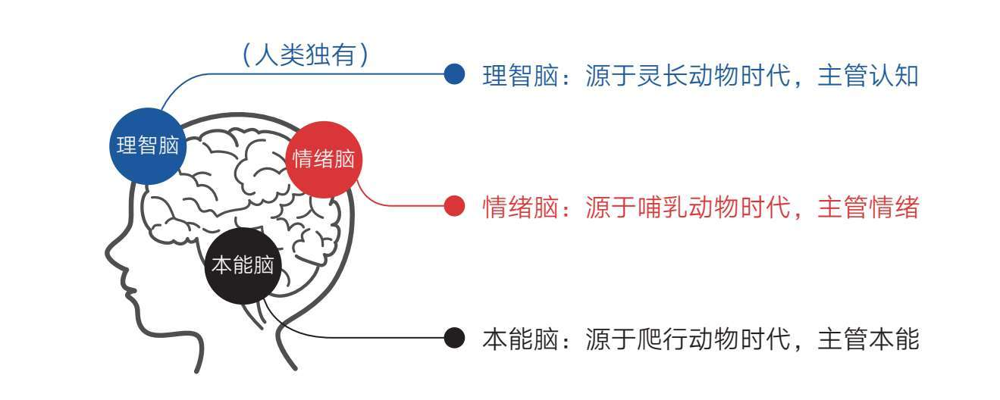
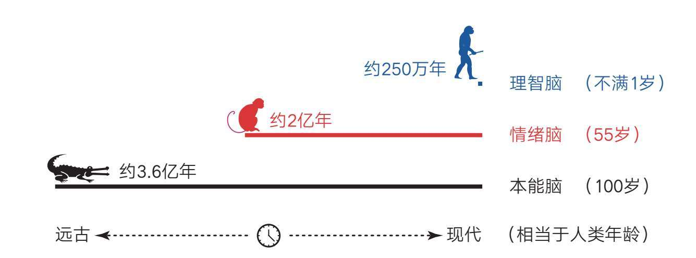
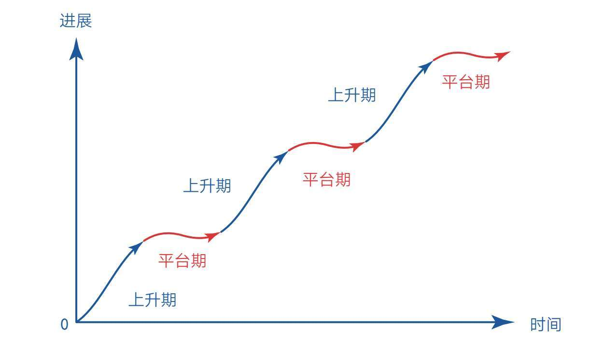
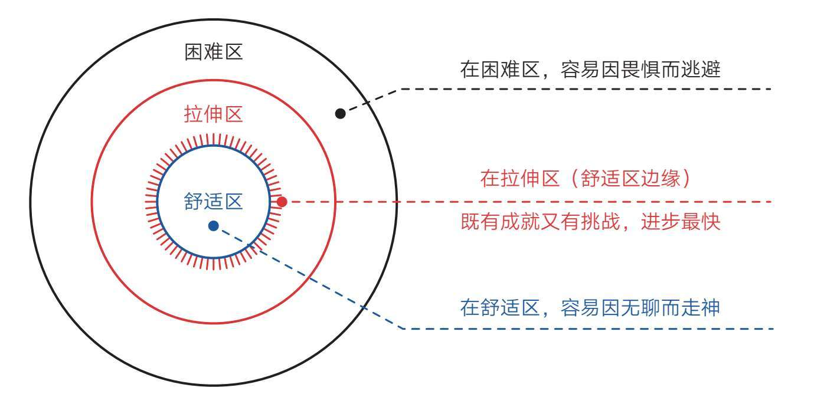
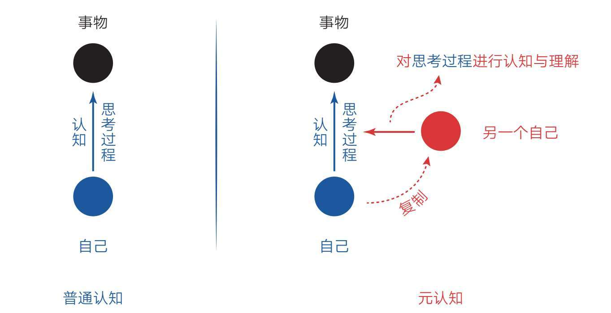
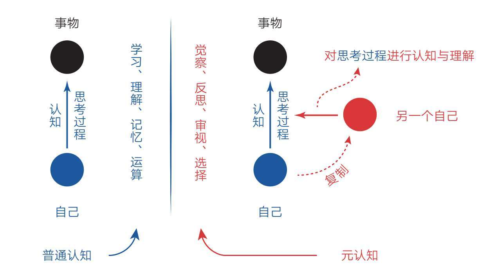

从小学起，我们就开始学习了。哦，不！更准确地说，从出生的那一刻起，我们就开始学习了。
在生命之初，我们倾听声音、观察世界、模仿行为；长大后，我们学习数学、背记课文、练习音乐……而这一切的发生，全因我们有一个神奇的大脑。
但是，你是否想过一件事？
那就是我们会用大脑去学习这个、学习那个，却似乎从来没有学习过大脑自身是如何运作的。我们一直在凭经验使用它，却从来没有看过它的“使用说明书”。
对我们每个人来说，大脑就像一个“黑箱子”。我们既不清楚它的组成和构造，也不知道它的特点和规律。所以，在学习这件事上，我们多少有些盲目，以致不可避免地遇到类似下面的困惑：为什么自己很努力，却没他人学得好？为什么自己总是分心走神，学习效率低下？为什么自己明明想学习，却总是忍不住去娱乐，等等。
如果现在有人给你一把钥匙，让你有机会窥探黑箱子里的秘密，我想你一定会迫不及待地打开它，然后想办法从中找到解决那些困惑的方法，让自己在学习方面拥有更多优势。
幸运的是，本书就是这把钥匙。现在，就让我们一起开启黑箱子，对自己所拥有的这个神秘的大脑一探究竟吧。
你一定记得《伊索寓言》中“农夫与蛇”的故事吧。
故事是这样的：一位农夫在寒冷的冬天发现路边有一条冻僵的蛇，他心生怜悯，把它放到自己怀里，用身上的热气温暖它。蛇苏醒后非但没有感恩农夫，反而咬了他一口。农夫临死前后悔地说：“我怜悯恶人，我该死，应该受报应。”
很可惜，如果这位农夫懂得一些大脑知识，他就不会犯如此低级的错误了，因为我们人类的大脑构造与蛇是完全不同的——我们人类有“三个大脑”[1]，而蛇只有“一个大脑”。
这个说法一定会让你很困惑。别着急，让我们一起来了解一下大脑的进化历程，你就明白这是怎么回事了。
起初，地球上并没有生命。但在数十亿年前，远古的海洋中出现了一些“复制子”，在进化的力量下，它们逐渐成为单细胞生物，接着又演化为动物、植物和微生物等，之后动物这条分支进化成各种原始鱼类，遍布大海。
约3.6亿年前，它们开始向陆地进军，地球进入属于爬行动物的时代。为了适应陆地生活，爬行动物演化出了最初的“本能脑”。本能脑的结构很简单，只有一个原始的反射模块，可以让爬行动物对环境快速做出本能反应，比如遇到危险就战斗或逃跑，遇到猎物就捕食，遇到心仪的异性就追求等。爬行动物既没有情感也没有理智，体温随外界变化的特性也让它们无法在寒冷的环境中活动，但依靠这种简单的本能反应，它们不仅生存了下来，一些动物还活到了我们这个时代，比如鳄鱼、蜥蜴、蛇等。所以很多学者把本能脑也称为原始脑、基础脑、鳄鱼脑、蜥蜴脑，或者干脆叫爬行脑。
到了大约2亿年前，哺乳动物开始登场。它们为了更好地适应环境，不仅让体温保持恒定，还进化出了情绪。有了情绪的加持，哺乳动物就能在恶劣的环境中趋利避害，大大提升其生存优势，比如恐惧情绪可以让自己远离危险，兴奋情绪可以让自己专注捕猎，愉悦情绪可以增强同伴间的亲密度，伤心情绪能引来同情者的关爱等。这也是为什么我们喜欢把猫或狗当成宠物，因为这些动物很容易和我们产生情感上的交流，懂得取悦和照顾我们。相应地，哺乳动物的大脑里也发展出一个独特的情感区域（边缘系统），脑科学家称之为“情绪脑”。在哺乳动物中，猴子经常被人类当作观察和实验的对象，因此情绪脑通常也被称作猴子脑。
直到距今约250万年前，人类才从哺乳动物中脱颖而出，在大脑的前额区域进化出了“新皮层”。这个新皮层直到7万～20万年前才真正成形，成为一个无与伦比的脑区，它让我们产生语言、创造艺术、发展科技、建立文明，从此在这个星球上占据了绝对的生存优势。人类沉迷于自己独有的理智，所以把这个新的脑区称为“理智脑”，当然，也有人喜欢称它为理性脑或思考脑（见图1-1）。

图1-1 人类的“三个大脑”
现在，让我们回到“农夫与蛇”的故事。我想你一定明白为什么那条蛇会“反咬一口”了，因为它的大脑里根本就没有发达的情绪脑，不知感恩为何物，所以只会依据本能行事，遇到危险要么战斗，要么逃跑；而愚昧的农夫竟然以为蛇和人类一样有善恶之心，会知恩图报，结果使自己命丧黄泉。
可见我们人类与这个世界上的其他动物已经迥然不同，在我们的大脑里，由内到外至少有“三个大脑”：年代久远的本能脑、相对古老的情绪脑和非常年轻的理智脑。
但大多数人并不知道这些，只是凭感觉认为这个世界上所有的动物都只有一个大脑，而人类仅仅比它们聪明一点。这种错误的认知使我们像那个救蛇的农夫一样，经常做一些愚蠢的事情。
很显然，我们的大脑并不是预先设计好的，而是由不同年代的模块“堆砌”而成的，就像一台七拼八凑组装出来的电脑，主板是老的，显卡是旧的，中央处理器却是新的，所以它们在一起工作时必然会出现很多兼容问题。
令人欣慰的是，高级的理智脑是我们人类所独有的，它使我们富有远见，善于权衡，能立足未来获得延迟满足[2]，从这个角度看，本能脑和情绪脑确实要低级些。不过我们若是因此而沾沾自喜，未免高兴得太早了，因为理智脑虽然高级，但比起本能脑和情绪脑，它的力量实在是太弱小了。细数起来，理智脑弱小的原因至少有以下四个。
第一，从出现的年代看，本能脑已经有近3.6亿年的历史，情绪脑有近2亿年的历史，而理智脑出现的时间只有约250万年。如果把本能脑比作100岁的老人，那情绪脑就相当于一个55岁的中年人，而理智脑则好比一个不满1岁的宝宝。可想而知，这个宝宝再聪明，若是在两个成年人面前，也会显得势单力薄（见图1-2）。

图1-2 “三个大脑”的年龄类比
第二，“三个大脑”发育成熟的时间不同。本能脑早在婴儿时期就比较完善了，情绪脑则要等到青春期早期才趋于完善，而理智脑最晚，要等到成年早期才基本发育成熟。如果不需要准确的数字，我们大致可以认为它们分别在2岁、12岁、22岁左右发育成熟，算起来各阶段时间相差约10年，所以在人生的前20年里，我们总是显得心智幼稚不成熟。在校学习的同学们正好处于这个阶段。
第三，我们的大脑里大约有860亿个活跃的神经元细胞，而本能脑和情绪脑拥有近八成，所以它们对大脑的掌控力更强。同时，它们距离心脏更近，一旦出现紧急情况，可以优先得到供血，这也是为什么当我们极度紧张时往往会感觉大脑一片空白，这是因为处于最外层的理智脑缺血了。
第四，本能脑和情绪脑虽然看起来比较低级，但它们掌管着潜意识和生理系统，时刻掌控我们的视觉、听觉、触觉……调控着我们的呼吸、心跳、血压……因此其运行速度极快，至少可达11000000次/秒，堪比当今世界上运行速度最快的个人计算机；而理智脑的最快运行速度仅为40次/秒，相比起来简直弱极了，并且理智脑运行时非常耗能。如果你第一次听说这些，肯定会感到惊讶。
种种迹象表明，理智脑对大脑的控制能力很弱，所以我们在生活中做的大部分决策往往来自本能和情绪，而非理智。当然，不管是何种因素影响我们做出决策，初衷都是让我们好，只不过本能脑和情绪脑的决策往往与现代社会脱节，因为它们以为自己还处于原始社会。
这也可以理解，毕竟亿万年来我们的祖先一直在危险、匮乏的自然环境中过着“狩猎与采集”的生活，对他们来说最重要的事情莫过于生存。为了生存，他们必须借助本能和情绪的力量对危险做出快速反应，对食物进行即时享受，对舒适产生强烈欲望，才不至于被吃掉、被饿死。
同样，为了生存，原始人还要尽量节省能量，像思考、锻炼这种耗能高的行为都会被视为对生存的威胁，会被本能脑排斥，而不用动脑的娱乐消遣行为则深受本能脑和情绪脑的欢迎，毕竟在原始社会中，若不节省能量、及时行乐，说不定哪天就被野兽吃掉了。
可见，本能脑和情绪脑的基因一直被生存压力塑造着，所以它们的天性自然成了目光短浅、即时满足。又因它们主导着大脑的决策，所以这些天性也就成了人类的默认天性。
然而社会的发展突然开始加速了。约1万年前，人类开始进入农业社会；约300年前，人类进入工业社会；约50年前，人类进入信息社会。这种变化对于古老的本能脑和情绪脑来说，简直就像一瞬间发生的事情，它们根本没有反应过来。它们突然不再需要为了基本生存发愁，舒适和娱乐又唾手可得，这让它们无所适从。我们今天虽然西装革履地坐在钢筋混凝土建造的大楼里学习、工作，但本质上依旧是那个为了生存而随时准备战斗、逃跑或及时享乐的“原始人”。
由于进化之手还未来得及完全改造我们，这些在远古社会具有生存优势的天性，在现代社会反而成了阻碍，甚至可以说，我们当前遇到的几乎所有与学习、成长有关的问题都可以被归结到目光短浅、即时满足的天性上，不过在现代社会，用避难趋易和急于求成来代指它们显然更加贴切。
·避难趋易——只做简单和舒适的事，喜欢在核心区域周边打转，待在舒适区内逃避真正的困难；
·急于求成——凡事希望立即看到结果，对不能马上看到结果的事往往缺乏耐心，非常容易放弃。
所以，一切都明了了。我们抗拒学习，并不是因为愿望不够强烈，也不是因为意志力不足，而是因为默认天性太强大。我们明知道学习很重要，但背后仿佛总有人怂恿我们再玩一会儿；我们明知道沉迷手机不好，但手和眼睛就是无法从上面挪开……每次理智脑与本能脑、情绪脑对抗的时候，败下阵来的总是理智脑，甚至有时候它还没来得及启动，身体就已经被本能和欲望“劫持”了。
为了更好地理解这一点，我们可以把大脑看作一个公司。本能脑和情绪脑是公司里的员工，一个资历很老，一个年富力强，但他们都没什么文化，也没什么事业心，只在乎眼前的舒适与安逸，而理智脑则是这个公司的经理，他富有远见且身居高位，但因为太年轻，所以没有威信，做出的决策经常被两位老员工藐视。这样的大脑构造导致我们总是陷入“明明知道，但就是做不到；特别想要，但就是得不到”的怪圈，比如：
·明知道学习重要，转身却掏出了手机；
·明知道跑步有益，两天后就没了下文；
·明知道要事优先，却成天围着琐事转；
……
不仅如此，一旦老员工掌控了公司的局面，他们还会经常迫使经理为他们糟糕的选择做出合理的解释——谁让你那么聪明呢，那你说说为什么我这么做是正确的！而弱小的经理也只好乖乖就范。
·这会儿也看不了几页书，不如玩会儿游戏轻松一下。
·最近天气不好，不宜跑步，还是过几天再跑吧。
·今天先玩吧，明天一定加倍学习，把今天浪费的时间补上。
……
这样，整个公司才显得和谐，大家在一起才不会尴尬。事实上，理智脑很少有主见，大多数时候我们以为自己在思考，其实都是在对自身的行为和欲望进行合理化，这正是人类被称作“自我解释的动物”的原因。
说到这里，你一定意识到了，提升学习能力的关键就在于让我们的理智脑尽快变强。只要理智脑强大了，我们就能克服天性带来的阻力，就能立足长远、保持耐心、抵制诱惑，在学习之路上大步快跑。
当然，克服天性带来的阻力并不意味着要抹杀本能脑和情绪脑，事实上也抹杀不了，它们三位一体，缺一不可。换个角度看，也没有必要抹杀，因为本能脑强大的运算能力和情绪脑强大的行动能力，都是不可多得的宝贵资源，只要深入了解，循循善诱，就能为己所用，甚至这些力量还是我们提升学习能力和成绩的关键。
同样，让理智脑变强也不是为了对抗或取代本能脑和情绪脑，因为用力量对抗无异于用一方的短板去挑战另一方的强项，注定是没有出路的。很多人在学习的过程中感到极度痛苦，就是因为他们总是用意志力去对抗本能和情绪，最后把自己搞得精疲力竭，却收效甚微。
为了避开这种误区，我们一定要记住：理智脑不是直接干活的，干活是本能脑和情绪脑的事情，因为它们的“力气”大；上天赋予理智脑智慧，是让它驱动本能和情绪，而不是直接取代它们。
就像我们大脑里的那位经理，他的职责既不是开除两位员工，也不是与他们对抗，更不是亲自上阵、包揽一切，而是学习知识，提升认知，运用策略，对两位老员工既尊重、包容又巧妙驱动，通过各种办法让他们开开心心地把活干了，最终使大脑这个“公司”团结和谐，欣欣向荣。
本节要点
1.人类的大脑由本能脑、情绪脑、理智脑组成。本能脑和情绪脑没有智慧，但力量强大；理智脑拥有智慧，但力量弱小。
2.人类有目光短浅、即时满足的天性，这在现代社会体现为避难趋易、急于求成。
3.虽然本能脑和情绪脑没有智慧，但它们拥有强大的运算能力和行动能力，只要理智脑学会驱动它们，我们就可以轻松走上学习之路。
你一定幻想过自己有超能力。
比如，某天你突然成为学霸，从此能轻松学会各种知识和技能，不仅每次能考第一名，而且才艺样样精通，在老师和同学们面前出尽风头，就像武侠小说里的普通少年经历一番奇遇后，轻松练成神功，然后过关斩将，做出一番成就。
如果被我说中了，不要不好意思，因为我也做过这样的白日梦。事实上，不仅你和我，这个世界上几乎所有人都会这样幻想，因为每个人的基因里都有避难趋易和急于求成的原始天性，所以每当遇到足够大的压力和困难时，人们都会不自觉地对那种不用付出巨大努力就能瞬间获得超强能力的快感心驰神往。
越是学习吃力的人越喜欢这样幻想，因为他们更希望得到解救。可惜幻想再美好也不会成真，幻想过后，我们依然要回到现实去面对真实的学习规则：要想成绩出众，必须保持耐心，不能急于求成。
但是，从小到大，从来没有人告诉过我们耐心到底是什么，怎样才能有耐心。我们只是一次又一次地被教导：“要保持耐心！不要猴急！不要三心二意！”以至于人们对耐心这个概念的理解普遍倾向于忍受无趣、承受痛苦、咬牙坚持、硬扛到底。总之就是用意志力去对抗——如果做不到，只能说明自己意志力不强。
然而真相根本不是这样的。我们对耐心的理解过于肤浅，以致大部分时间都在痛苦中挣扎。
看看那些缺乏耐心的人吧。他们总想在很短的时间内就学会一样东西，比如练习三五天就要看到效果，行动21天就想养成一个习惯……一旦在短时间内看不到进步，他们就开始热情锐减、自我否定，然后马上放弃。他们总觉得自己只要想学就一定能学成一样东西，所以满脑子都是欲望，既想学这个，又想学那个，结果因为目标太多导致哪个都坚持不下去。他们还热衷于制订学习计划，因为“完美”计划出炉的那一瞬间，他们心里会极度满足，就像自己已经完成了一样，但没过几天，那计划可能就无疾而终了。他们喜欢到网上寻找各种学习方法，似乎拥有这些方法就可以让别人对自己刮目相看，但这种寻找捷径的心态反而让自己变得更加浮躁，因为他们无法忍受正常进步的速度。他们看到其他同学进步时会变得非常焦虑，只好给自己“打鸡血”，发誓一定要在很短的时间内逆袭超越，结果越学越焦虑……
总之，他们总想同时学很多东西，还要马上看到结果，还想不经历学习的过程，这样的心态注定他们的学习成绩平平。如果一个人的耐心水平始终处于这种程度，那么他的学习生涯将始终暗淡无光，所以我们一定要补上这一课，让自己真正拥有无坚不摧的学习品质。
关于这一点，我们已经在本章第一节达成共识：缺乏耐心根本不是什么可耻的事，和自己的道德品质也全无关系，这仅仅是人类的天生属性罢了，每个人都一样。如果你觉得这些共识仍有些虚无，那不妨再观察一下身边的婴儿、孩子和成人。
婴儿刚出生时，理智脑的作用极其微弱，全靠本能生活。出生6个月之内的宝宝会认为自己是全能的，整个世界会随着自己的意念而动，这可谓最强烈的即时满足；几岁的孩子可以瞬间切换笑脸和哭脸，得到满足就立即欢笑，不满足就马上暴怒，他们毫不掩饰自己即时满足和耐心不足的特性；等到上学后，随着理智脑的发育和学识的增长，他们的耐心开始变得越来越强，小学、中学、大学时呈现明显的不同；成年后，其生理机能趋于稳定，但此时若停止自我探索，保持耐心的能力可能会永远停留在当时的水平，甚至倒退。如再仔细观察，我们不难发现，学校里的学霸通常是那些更能克服天性的人，他们的耐心水平更高，延迟满足的能力更强。
无论从历史、现实考量，还是从生理角度看，一切关于耐心的线索都指向了理智脑这块人类独有的前额皮质——了解这一点，对于提升学习能力意义重大。当然，仅仅了解这些还不够，我们还需要进一步观察大脑的其他特性。
我们对学习缺乏耐心，很多时候是因为我们不了解大脑的学习机制，在这方面，我们每个人似乎都有很大的盲区。
在科学家看来，无论学习知识还是技能，其本质都是大脑中的神经元细胞在建立连接。用神经科学的术语解释就是，通过大量重复学习或练习，大脑中两个或多个原本并不关联的神经元受到反复刺激后产生了强关联。所以，这个过程在初期必然是非常缓慢的，因为它们之间还没有形成顺畅的通路。但只要持续学习或练习，这些连接就会越来越多、越来越强，最终形成一张高效的网络，使自己在某天开始加速并突破。
这一点不难理解。当我们还不会骑自行车的时候，看别人骑，会觉得那并不难——只要手把方向，双脚交替踩踏就可以了。然而真到了自己骑的时候就不是那么回事了——重心左摇右晃，方向左摇右摆，速度快不起来，害怕摔倒，紧张得厉害……这是因为我们还没有进行足够多的练习，大脑中相关的神经元也没有受到过足够多的刺激并产生强关联，所以，即使我们能轻松理解骑自行车是怎么回事，但这项技能自己实际并未掌握。直到我们学会这一技能，再经过无数次的日常运用，大脑中相关的神经元连接才会变得异常牢固，我们才会真正掌握骑车这项技能。
学习知识也是如此。要想记住一个陌生的单词，我们就得反复读、反复写、反复用，有时可能稍微隔几天没用，对这个单词的印象就会变得模糊。原因就是它在大脑中的神经元关联还不够牢固。
知晓这个原理意义重大，因为它至少可以给我们两个启示。
一是在学习或练习的初期，我们做不好或一时看不到进步是很正常的。此时一定要提醒自己保持耐心，不要盲目责备或否定自己，要多给自己鼓气，给大脑中的神经元更多关联的机会和时间，坚信它们一定会越来越强。
二是没有人是学不会、学不好的。因为大脑具有可塑性，只要给它足够的时间，或我们更努力，大脑中的神经元通路一定可以变得更加顺畅。很多学习不好的人总觉得自己比别人笨，认为自己的脑子不好使，认为自己天生就不是学习的料，这种观念显然是错误的。只要遵循正确的方法，暂时落后的人也有逆袭和改变的机会。
以上是学习在大脑中的微观规律。如果我们把视线放到学习的整个过程中，会发现学习还有另一个有趣的规律，那就是学习具有平台期。这个规律表明，学习进展和时间的关系并不是我们想象中的那种线性关系（学多少是多少），而是呈现一种波浪式上升曲线（见图1-3）。
几乎任何学习都是这样，刚开始的时候进步很快（因为基础知识相对简单），然后速度会变慢，进入一个平台期。在平台期，我们可能付出了大量的努力，但看起来毫无进步，甚至可能退步，不过这仅仅是一个假象，因为大脑中的神经元细胞依旧在发生连接并被不停巩固，到了某一节点后，就会进入下一个快速上升阶段。

图1-3 学习曲线
比如在学习英语的过程中，建立一个新的语言“过滤器”，通常需要6个月才能突破平台期。很多人并不知道这个规律，坚持了5个月，发现自己没有进步，就摇头放弃了。这样的做法真的很可惜，因为好不容易建立起的神经元连接会在放弃练习后弱化、消失，下次学习就得重新开始。而那些坚持用英语“熏耳朵”的人，往往会在某一天突然发现，原来听不懂的英语好像都能听懂了，这就是突破平台期的典型表现。我猜每个人在生活中都有过这样的体验。
当我们清楚了上述规律后，就能在起步遇挫或暂时坚持无果时做出与他人不同的选择：有人选择放弃，而我们继续坚持。同时，我们不会因自己进步缓慢而沮丧，也不会因别人成长迅速而焦虑。毕竟每个人所处的学习阶段不同，只要继续坚持，我们就能达到同样的水平。从这个角度看，耐心不是毅力带来的结果，而是具有长远目光的结果。
在学习的世界里，还有一个非常重要的规律——舒适区边缘。它揭示了能力成长的普遍法则：无论个体还是群体，其能力都以“舒适区—拉伸区[3]—困难区”[4]的形式分布，要想让自己快速进步，必须让自己始终处于舒适区的边缘，贸然跨到困难区会让自己受挫，而始终停留在舒适区会让自己停滞（见图1-4）。

图1-4 在舒适区边缘扩展自己的学习范围
人类的天性却正好与这个规律相反。
我们在欲望上总是急于求成。比如我们总想一口吃成个大胖子，既想学这个，又想学那个，还想学得多、学得快、学得难，这种心态必然会让自己在困难区终日受挫。
我们在行动上总是避难趋易。比如一些同学表面上看起来很用功，整天学习，仿佛从不休息，努力到感动自己，但学习成绩却始终平平，因为他们看起来好像很有耐心，实际上只是在舒适区内打转，重复地做着那些不用动脑的事情，对真正的核心困难绕道而行。
如果我们能学会在舒适区边缘努力，那么收获的效果和信心就会完全不同，因为舒适区边缘是既有成就又有挑战的区域，也是进步最快的区域。至于如何在舒适区边缘努力，我会在本书第五章详细介绍。你暂时不理解也没有关系，只需先记住它。总之，这个规律非常重要，是我们化解学习困难的核心要领。
拥有耐心并非难事。其实，知道大脑构造和学习规律的这些知识，我们的耐心水平就已经在无形中提升了很多。但这远远不够，我们还需要寻找更多的路径去增强它，比如以下这些。
第一，面对天性，放下心理包袱，坦然接纳自己。
当我们明白缺乏耐心是自己的天性时，就坦然接纳吧！从现在开始，对自己表现出的任何急躁、焦虑、不耐烦，都不要感到自责和愧疚，一旦觉察自己开始失去耐心了，就温和地对自己说：“你看，我身体里那个原始人又出来了，让他离开丛林到城市生活，确实挺不容易的，要理解他。”只要你温和地与自己对话，“体内的原始人”就会愿意倾听你的意愿。当然，培养耐心的过程可能比较长，不要指望一下子就能很有耐心。如果对自己不能立即变好这件事感到焦虑，这本身就是缺乏耐心的表现。培养耐心要从接受自己缺乏耐心这一事实开始。
第二，面对诱惑，学会延迟满足，变对抗为沟通。
舒适和诱惑是本能脑与情绪脑的最爱，完全放弃舒适和诱惑就相当于和本能脑、情绪脑直接对抗，很显然，理智脑根本不是它们的对手，失败是迟早的事。明智的做法是和它们沟通，这也是理智脑最擅长的。就像上面自己和自己对话一样，温和地告诉它们：“该有的享受一点都不会少，只是不是现在享受，而是在完成重要的事情之后。”这是一个有效的策略，因为放弃享受，它们是不会同意的，但延迟享受，它们是能接受的。
以写作业为例。每次回到家，你可能都想先放松一下再写作业，但一放松就很可能会松上半小时，结果写作业时很难进入状态，就连玩的时候也会因为还有作业没完成而不能尽兴。所以，你进家门前，不妨用一分钟的时间和自己对话：“暂时忍耐一下，先做作业，之后再给自己专门留半小时或一小时，怎么玩都行。”通过自我沟通和引导，本能脑和情绪脑产生了安全感，通常它们就舍得放手让理智脑插个队。
这种“后娱乐”的好处是，将享乐的快感建立在完成作业后的成就感之上，很放松，也踏实，就像一种奖赏；而“先娱乐”虽然刚开始很快活，但精力会无限发散，拖延学习任务，随着时间的流逝，人也会空虚、焦虑。
多次体验之后，身体里的原始人也会倾向于支持“后娱乐”，毕竟这样更舒适。如果你养成习惯，优先完成作业后产生的满足感也可能取代娱乐带来的直接快感——既然有高层次的享受可选，你对低层次的享受自然就不那么想要了。
当然，习惯养成之路绝不像我讲的这么轻松，有时候，那种“不玩不舒服”的冲动实在是太强烈了。怎么办？策略依旧是和自己对话：“就玩一下，5分钟，时间一到马上结束。”不要强行对抗，也不要自责，让冲动适当缓解一下也很有效。
耐心的养成就是这样，不能急于求成，允许自己缓慢地改变，甚至经常失败。无论结果如何，和自己对话都会产生效果。
第三，面对困难，主动改变视角，赋予学习意义。
同样是学习，为什么有的人三天打鱼两天晒网，而有的人却能够持之以恒呢？除了之前提到的各种规律，还有一个重要的原因是他们看待学习的视角不同。比如，在一些人眼里，学习可能只是作业和考试，是不得不完成的任务，但在另一些人眼里，学习可能是一种追求和挑战，甚至是一种享受。所以，要想办法看清学习的意义和好处[5]，你看到的维度越多，耐心就会越强。
事实上，这还不是最高级的方法，你肯定想不到最高级的方法是请本能脑和情绪脑出动来解决困难。
是的，你没有听错！本能脑和情绪脑确实畏惧困难，只会享乐，但谁说它们不能从困难的事情中感受到乐趣呢？对本能脑和情绪脑来说，它们根本不在乎你是在玩手机还是在解方程，它们只在乎是否舒服。科学家废寝忘食地沉迷于研究，是因为他们真的乐在其中；跑步者风雨无阻地迈腿奔跑，是因为他们自己不愿意停下，他们正舒服着呢！
所以，想办法让本能脑和情绪脑感受到困难事物的乐趣并上瘾，才是理智脑的高级策略[6]。学会释放本能脑和情绪脑的强大力量，我们就会无往不胜！
本节要点
1.缺乏耐心是人类的天性，我们要坦然接纳，不要盲目自责。
2.学习的本质是大脑中的神经元细胞建立连接的过程，在初期，其发展必然是缓慢的，不要因为一开始学不好就否定自己、轻言放弃。
3.学习的进展和学习时间并不是学多少是多少的线性关系，它有“平台期”，呈现波浪式上升曲线。
4.学习能力以“舒适区—拉伸区—困难区”的形式分布，在舒适区的边缘努力，体验最佳，进步最快。
5.学会和身体里的“原始人”对话，这样，我们的自控力就会增强。
随着探讨的深入，我相信你对理智脑的了解已经越来越多了，特别是在第二节，我们还把它比作一个可以和自己对话的小人。
这个比喻非常形象。事实上，人类的“三个大脑”都可以被看作大脑里的小人，只不过我们平时称呼它们的时候只用“两个小人”——“原始小人”和“现代小人”，或者“情绪小人”和“理智小人”。
这样分类是有原因的。一方面，本能脑和情绪脑都很古老，它们的特性也很相似（力量强大但缺少智慧），所以我们把它们统称为“原始小人”；另一方面，由于我们能感知到并主动施加影响的只有情绪脑和理智脑，所以用“情绪小人”和“理智小人”来描述大脑的工作情况更为准确。
为什么我们很难对本能脑施加影响呢？因为本能脑是基础，它无须意识的参与就能自动运行。如果你不理解这句话，不妨想想我们睡觉的场景。当我们睡着的时候，我们的意识和情绪都会“关闭”，但此时呼吸、心跳等都会自动进行，而这些功能都是由本能脑控制的。
可见，本能脑属于潜意识的范畴，它不在意识的掌控范围之内。如果非要对它做点什么，那大概就是在遇到紧急情况时主动提醒自己进行深呼吸，因为这个动作可以让大脑平静下来，脱离“战斗或逃跑”的本能控制，让理智脑恢复掌控。
关于本能脑的知识，先“插播”到这里，现在让我们回到本节的主角——理智小人身上。作为我们学习的主体，理智小人用于学习的工具是什么呢？答案是“工作记忆”。
所谓工作记忆，就是在大脑中对正在处理的信息进行瞬时及有意识加工的这部分记忆，简单来说就是理智脑可以使用的脑力资源。人类的大脑看起来很厉害，但意识所能处理的信息数量并不多，大概只有7±2个[7]，有的人多些，有的人少些，但都在7个左右。
如果你是第一次听说这个理论，可能会怀疑我在胡说八道，不过我不需要阐述科学原理也能让你信服。不信的话，你可以尝试记住一些无意义的数字或不熟悉的物品名称。在短期内，你通常只能记住7个左右，多了就记不住了。同样，在生活中，你通常也只能同时记住六七件事；在工作记忆饱和的情况下，如果你又接收到一条新信息，那你只能移除一条旧信息。这就是为什么你明明想着去晾洗衣机里的衣服，但接到快递员的电话后，转眼就把晾衣服这件事给忘了，因为它已经被你从工作记忆中移除了。为了方便表述，我就以7为基准，就像一周有7天一样，我们可以想象理智小人手里有7个小球，它们代表我们的脑力资源。
其实同为人类，大家的脑力资源配置都差不多，没有谁的大脑更加特殊，但不同的人在脑力资源的使用上确实有差异。不难想象，成绩好的人的真正优势在于他们能够长时间让大脑中的7个小球同时关注一件事情，以保证高质高效地学习，而一些人之所以成绩不好，很可能是因为其大脑中一个球在播放背景音乐，一个球在想晚上吃什么，一个球在担心即将到来的考试……真正用于学习的小球或许只有三四个。而且，那些不学习的小球还可能干扰或压制正在学习的小球，这就可能造成7–3＜4的效果，而成绩好的人的小球集中配合，可能产生4+3＞7的效果。你可以想想，日积月累，这种脑力差异会使人产生怎样的差距。
所以，人和人之间的能力竞争，说到底就是脑力资源利用率的竞争，你能多开发一个小球的脑力，就多一点竞争力。好在人与人之间的脑力差异并非不可逾越，只要我们继续观察大脑的特性，就可以调节和训练这7个小球。
为了更好地理解以上内容，我们可以把大脑想象成一个房间，房间里有7个小球。仔细观察它们，你会发现有些小球非常“轻”，轻得像乒乓球一样在房间里来回跳动，混乱得很。因为这些小球代表那些脱离现实的思绪，比如一个不切实际的幻想、一个电视剧中的场景、一件很期待的事、一段不断循环的背景音乐……所以，很多人看上去是坐在那里学习，但他们脑中的杂念像热锅里的气体一样上下翻腾，心里只想那些轻松有趣的事，这种状态一定会让人心浮气躁，无法对学习保持专注。
你也会发现有些小球很“重”，犹如铁球一样沉在房间的某个角落。这些重量来自巨大的压力，比如作业堆积导致的心里发慌、单元测验带来的担忧害怕、对手超越引发的着急焦虑、他人误解造成的生气难过……这些沉重的情绪如同磐石一般压在大脑中，挥之不去。我们既无法驱散，又不愿触碰，于是不得不让它们长期占据自己的脑力资源，影响自己的学习。
一轻一重，其实都是期待、紧张、畏惧、担忧、害怕等情绪在作怪。因为情绪脑缺乏智慧，它只能粗糙地将事情分为“喜欢”和“害怕”两种，然后对喜欢的事情沉溺其中，对害怕的事情不停地担忧并反刍[8]。同时，情绪的力量又很强大，它会严重影响理智脑的工作。
对学习来说，保持平稳的情绪是最理想的状态，大喜、大悲等剧烈波动的情绪对学习都极为不利。事实上，只要我们的注意力被某个巨大的事物吸引，我们的判断力、认知力、行动力和自控力都会下降。这也是学校避免学生早恋的原因，因为学生的注意力一旦被某个异性占据，那么他用于学习的脑力资源就会非常有限。无论双方的关系是好是坏，都不可避免地会干扰学习。所以，为了保持长久的学习竞争力，学生应该慎重对待学习期间早恋这件事。毕竟，如果一个人因为早恋而错失美好的未来，是得不偿失的。
正因如此，我们才会经常听到“先处理心情，再处理事情”这样的建议。
不过，处理这些情绪的方法倒也简单，只要把它们“写下来”就可以了。比如，你可以准备一个本子，在学习过程中察觉有杂念冒出来时，就用一句话把这个念头描述出来，然后问自己：“这个想法有意义吗？我现在想它有必要吗？”你会发现这些想法通常是没意义和必要的，你也会意识到先专心学习是更好的选择，那些杂念完全可以事后再想，反正它们都被记下来了，跑不掉。
对于那些沉重的事情，你需要找个专门的时间把它们写下来，然后问自己：“我到底在担心什么、害怕什么、期待什么？”只要你敢于正视，那些紧张、担忧、畏惧、害怕等情绪就会在清晰的观察下无处遁形，那些隐性的压力也就变得不那么令你伤神了，小球的重量自然也会减轻。
“写下来”的效果就是这么神奇，你一定要去试试。至于其背后的科学原理，我会在后文详细解说。我敢肯定，只要你了解了“写下来”的真正威力，一定会对这个习惯爱不释手。
除此之外，我们还能对脑中的“7个小球”做点什么呢？
一个很有效也很神奇的方法就是凝神呼吸。
顾名思义，凝神呼吸就是在安静处进行闭眼深呼吸，过程中把所有的注意力都集中到呼吸和感受上。
你肯定很疑惑这种专注呼吸的活动怎么会与学习有关。但如果我把它比作大脑的“健身操”，相信你马上就会明白其中的奥秘——大脑通过这种活动可以同时训练7个小球做一件事。坚持这种练习，我们就能养成专注的习惯，将专注变成无意识的行为，平时也能自动抑制思维离散，控制涣散的精神。换句话说，“7个小球”都能在需要的时候为我所用。现在，你终于知道这件看起来什么都没做、与学习毫无关联的活动，是如何使一个人变聪明的了吧？
我们平时学习各种技能，比如钢琴、游泳、体操等，都会提高相关脑区的神经元密度，促进脑细胞之间的信号沟通，但是这些练习一旦停止，神经元就会开始减少，而凝神呼吸带来的改变是持久的。
如果你平时不具备练习的环境和条件，那你可以有意识地让自己保持身心合一的状态。比如，跑步时，全力感受抬腿摆臂、呼吸吐纳或迎面的微风；睡觉时，全力感受身体的紧张与松弛；吃饭时，全力感受饭菜的味道，体会味觉从有到无的整个过程，不要第一口饭菜还没吃完就急着往嘴里塞第二口饭菜……这样的注意力练习也同样有效。
当然，你也许会问，一个人要是全神贯注地打游戏，是不是也能变聪明？答案是否定的。因为这一练习的关键在于主动控制注意力，而游戏是被动专注，是高刺激下的被动吸引。这种专注不仅没有好处，还会损害学习的专注力。包括放空大脑或胡思乱想，都无助于提升人的专注力。
凝神呼吸看起来很简单，但做起来并不容易，因为你会发现自己很容易分心走神，甚至几秒都坚持不了。但是没有关系，人们一开始都会经历这个过程，只要持续练习，我们的专注力自然就会越来越强。
归结下来，无论训练小球还是调节小球，它们的共同目的都是开发大脑用于学习的脑力资源。
人们常说：“想致富，先修路。”其实学习也是如此——想进步，我们也要先修大脑里的“路”，而且要修“高速公路”。如果路修得好，我们还能在这条高速公路上拓出七条车道。
一个飞驰在七车道高速公路上的人，一定比那些在羊肠小道上的人跑得更快、更远。
本节要点
1.大脑内部可以用“原始小人”“现代小人”或“情绪小人”“理智小人”来类比。
2.理智小人手中有7个小球，它们是我们学习知识的脑力资源。
3.小球极易受情绪影响，而“写下来”可以调节情绪。
4.凝神呼吸是大脑的健身操，持续练习会令人自然专注。
现在，你已经知道理智小人手中有7个小球，但你知道他身后还有一对翅膀吗？
想想看，如果你的理智小人能振翅飞翔，那你在学习的道路上就能“飞”着前进，这将是种巨大的优势！可惜，绝大多数人意识不到自己有这对翅膀，更别说主动挥动它们了。如果你想唤醒自己的这对翅膀，那就随我继续探索大脑的高级功能吧。
要想了解这对翅膀，我们还得从镜子说起。
假设在全世界的动物面前都放一面镜子，你猜会发生什么事？它们会认为镜子里的那个动物不是自己，而是另一个动物（人类和大猩猩除外）。但人类和大猩猩还不一样，大猩猩只能分辨镜子中的猩猩是自己，一旦把镜子拿走，它就无法想象另一个“虚拟的自己”了，因为它们的大脑只能关注现实中存在的东西。
而人面前的镜子即使被拿走，我们也可以从自我和当前的情境中脱离，设想“另一个自己”站在面前。而且，因为这个“自己”是我们想象出来的，所以他不受身体的束缚，可以“飞”到高处，甚至可以360°地围绕自己、观察自己，就像身上长了一对翅膀。这种跳出自身、从他处反观自己的能力，就是人类认识上的终极能力——元认知。
你可能从来没听过“元认知”这个词，没关系，我们只需将它拆开，就可以理解了。
元，在汉语中有“头、首、始、大”的意思，即最高级别的，比如一个国家的最高领导人会被称为国家元首。元认知，就是最高级别的认知，它能对自身的思考过程进行认知和理解（见图1-5）。
听起来有些拗口，实际上，元认知能力就是我们习以为常、见怪不怪的自我觉察和反思能力。这种能力不仅为我们人类所独有，也是我们成为万物之灵[9]的根源。因为其他动物只能靠本能和情绪来生存，而人类不仅可以依靠理智来生活，还可以通过理智来观察自己的思维活动，找出其中不合理的地方，然后改进优化，不断做出更好的选择。

图1-5 普通认知与元认知的区别
有了这种能力的加持，我们的认知能力和学习能力就可以快速进化，因为具备这种能力的思维就好比一把锤子，它不但能钉钉子，还能复制出另一把锤子来锤打自己。只要方法正确，时常修正，那么这把锤子就会进化成更高级的工具。
可惜，这种能力并非默认开启的。
至少我们在人生的前10年里，很难成功开启它，因为我们的理智脑还未发育成熟，还不具备负责这部分功能的硬件条件。一个人需要长到12岁（小学六年级）左右才能慢慢具备主动的自我反省能力，而在此之前，人们只能从自己的视角出发理解一切事物，注意力也很容易被外界的事物牵引着走。
在此之后，事情虽然会慢慢发生变化，但这种自我察觉和反思的元认知能力却很少有机会得到锻炼，因为我们的理智脑虽然在学校里进行了大量的锻炼，但锻炼侧重的是“学习、理解、记忆、运算”这些方面的能力，很少涉及“觉察、反思、审视、选择”方面的能力。所以，很多人虽然学会了很多知识，但他们在自我觉察、自我控制、自我纠错、自我激励上非常被动，而这种被动会对学习产生巨大的阻碍。
可见，理智脑的学习能力分为两部分——普通的认知能力和高级的元认知能力。而后者就像一对隐形的翅膀，很少有人注意到它（见图1-6）。

图1-6 认知能力由普通认知与元认知组成
一个未开启元认知能力的人会无意识地顺着感觉和喜好行事，无论在生理上还是在精神上，都会不自觉地追求眼前那些舒适和简单的事。所以，他们的学习状态往往是这样的：在学习时很容易被外界事物诱惑吸引、经常分心走神而不自知；缺乏自控力，凡事喜欢从最轻松的部分开始；对学习中遇到的错误不敏感，考试成绩不好时只在当时难过一会儿，过后就会忘记；从不主动思考学习的意义，学习对他们来说就是外界要求的任务；情绪波动无常，一旦遇到矛盾就会怨天尤人，或沉浸在悲伤情绪里无法自拔……
他们似乎只有在迫不得已的情况下才会扇动翅膀，比如遭遇指责、批评时，才不得已去反思纠正；一旦回到顺境，依旧会顺着“目光短浅、即时满足”的本性生活，该懒散懒散，该拖延拖延，对自身行为的好坏毫无觉察。
另一些人与之相反，他们会在没有威胁的情况下尝试练习扇动翅膀，让自己不断进化，彻底远离危险。当他们开启元认知能力后，生活和学习状态就会完全不同。这种不同至少体现在以下几方面。
首先，他们能主动控制注意力，不会被随机、有趣的信息随意支配。比如，他们能及时觉察到自己在分心走神，然后马上提醒自己把注意力拉回学习上来，就像身边有个人在监督他们一样；他们的注意力在遇到诱惑时不会轻易被干扰或被带跑，因为他们会问自己“什么事情更重要”，就像身边有个人在提醒他们一样。
其次，他们能及时审视自己的第一反应。比如，一般人遭遇批评、否定或责骂时，他们会本能地生气、解释或反驳，甚至会不假思索地“骂”回去。但元认知能力强的人能及时察觉这种内心反应，并留出时间对这种本能反应进行审视，比如，他们会站在对方的立场上看问题，试着把对方的观点和情绪分离，如果发现对方说得有道理，他们就引导自己关注对方正确的观点而不是糟糕的情绪，这样不仅可以使自己继续进步，还能使自己快速走出情绪旋涡；如果发现对方说得毫无道理，他们也不会本能地骂回去，而是选择自嘲一番或干脆一笑而过，毕竟实在没有必要和一个不讲道理的人较劲。
自然，这样的人在和别人说话时也会更加稳重。因为他们每次说话前都可能把想说的话在脑子里过一遍，想想这句话说出来后对方会有怎样的感受，这样就能避免不经思考的本能反应，使自己成为一个情商更高的人。而一个拥有良好人际关系、平稳情绪和开放心态的人，必然能为自己脑中的“7个小球”创造好的学习条件。
再次，他们能用未来视角审视现在。比起一般人，元认知能力强的人更容易知道自己想要什么样的人生，知道什么事情更重要，也更容易解开眼前的困扰，因为他们经常站在未来审视现在，就像“另一个自己”飞到几十年后回头看现在的自己，他们知道自己不应该在无意义的事情上浪费时间。拥有这样的未来视角，他们自然不会陷入浑浑噩噩的生活状态，对生活和学习也必然拥有不一样的动力。
最后，他们总能在高处俯瞰全局，不会一头扎进时间和行动的细节里。元认知能力强的人更擅长抓住并思考那些少量的“关键时间”，从而让其他多数时间变得更有效率。比如他们习惯每天早上用10分钟来规划全天的安排，这样便可以让自己全天保持清醒，不会被无关的诱惑轻易带偏，就像“另一个自己”始终站在高处总揽全局，为自己导航；同样，他们也更愿意花“专门时间”去思考做一件事情的意义与好处，让自己产生不一样的动力，避免人云亦云，盲目跟风。
总之，开启元认知能力的人就像有了一个“灵魂伴侣”，无论何时何地，他都有一个“理想中的自己”在引领自己。这样的人一定比那些未摆脱本能和情绪掌控的人走得更快、更远，因为他们是“飞”着前进的。
所以，只要去实践，你就一定能发现元认知的更多应用场景和非凡效果。
事实上，只要你知道元认知能力的存在以及它的各种表现，你就已经在不经意间开启了这个能力。当你能感觉到另一个“理想中的自己”在身边陪伴时，你的元认知能力就会保持在线。
当然，一开始它可能不太稳定，会经常“掉线”，这是正常的，因为元认知能力的培养就像锻炼肌肉一样，需要耐心和时间，只要持续运用，它就一定会越来越强。
另外，常做以下几件事也会对提升元认知能力有巨大的帮助。
一是增强学识。毫无疑问，一个人掌握的规律越多，他就越有可能跳出无知的境地，做出更加正确的选择。
尤其值得关注的是脑科学和认知科学，这类知识是对我们自身行为模式的直接描述，学习它们相当于直接观察我们自己。正如当我们知道自己的大脑构成时，就能意识到自己体内其实有一个“原始小人”和一个“现代小人”，我们的一切行为表现其实都是它们博弈的结果，这样，我们就知道该如何指导那个“现代小人”取得胜利，从而让自己变得更强。
二是时常反思。一个从不反思的人一定会在同一个地方反复摔倒，这样的人无论在生活还是学习方面，进步都会非常慢。而一个擅长反思的人在遇到错误或问题后会主动复盘自己的思考过程，查找思维上的漏洞和不足，就像“另一个自己”回到了过去，在观察当时那个正在犯错的自己。
值得提醒的是，反思不能只在脑子里进行，一定要将过程“写下来”——不仅要写下事情的过程，还要查找原因并制定改进措施。只有这样，反思的效果才会深入，我们才有机会带着“注意点”去学习、去生活。
三是凝神呼吸。凝神呼吸的过程其实也是自我反观和控制注意力的过程。从本质上看，它和元认知是同一件事，所以练习凝神呼吸可以提升我们的元认知能力。
事实上，培养和运用元认知能力的方法远不止这些，但限于篇幅，我仅在此做初步介绍，后文中，我还会持续介绍元认知，你会发现元认知能力对我们学习的影响无处不在。
从更大的角度看，元认知能力也是我们人生觉醒的关键。因为人有两次生命，一次是出生，一次是觉醒。而觉醒的标志，就是有一天你开始成为自己的思维舵手，开始主动掌控自己的思想和言行，追求自己的目标和使命，不再浑浑噩噩、随波逐流。
本节要点
1.人类有元认知能力，它能对自身的“思考过程”进行认知和理解。
2.人类因此拥有自我觉察和反思的独特能力。
3.开启元认知能力的人就像有了一个“灵魂伴侣”，无论何时何地，他们都有一个“理想中的自己”在引领自己。
4.元认知能力的培养需要一个较长的过程，不要急于求成。
5.一个人成为自己的思维舵手，他的人生觉醒就开始了。